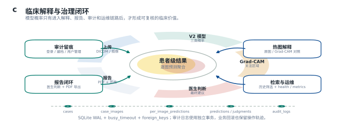

Clinical AI Workflow
面向医院妇科超声检查，把图像、检查文本、患者级聚合和临床工作流整合为可部署的 AI 辅助诊断工具。
Method
300×300 图像输入 EfficientNet-B3；检查方式与检查所见清洗拼接后送入医学 BERT。两路特征经 ImageDominantGatedFusion 生成三类 softmax。
Inference Flow
单例任务优先级=0；批量任务优先级=5。模型调用保持单执行器串行，批量按患者逐步推进，单例可在图像间插队。
Clinical Loop
系统不仅输出概率，还保存病例、图像、逐图预测、患者级预测、医生判断、批量任务、会话和审计日志。
